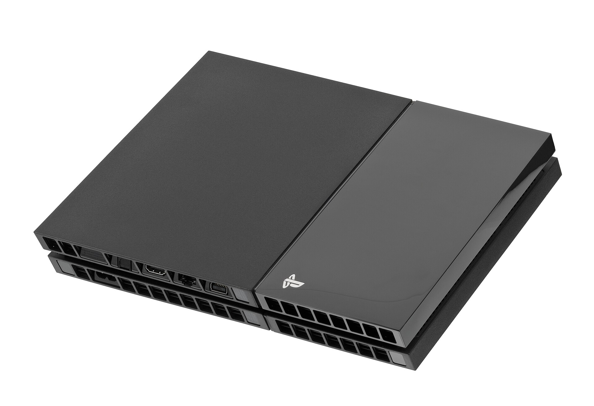

PS4JB6.00 – 13.52
Firmware
9.00
Chainpsfree + lapse
SourceUser-Agent
النسخة محفوظة. التهكير يشتغل من غير إنترنت
المحرك اتثبّت جوه الموقع نفسه. افتح الرابط على السوني — الصفحة تتعرف على النسخة، تجهّز الكاش، وتشغّل السلسلة المناسبة. مفيش تحويل لموقع تاني.
عشان السوني ما ينزّلش تحديث يقفل التهكير.
بعدين أضف الصفحة للمفضلة عشان ترجع لها فوراً.
من إعدادات الشبكة اختار DNS يدوي وادخل الرقمين دول. لو السوني عرّف يتصل بالإنترنت عادي بعد كده، التحديث هيقفل سلسلة التهكير.
افتح متصفح السوني، امسح الكوكيز والكاش من قائمة الخيارات، وبعدين ضيف رابط الموقع للمفضلة. أول مرة هتاخد شوية وقت عشان الكاش يتحفظ.
على السوني نفسو افتح الرابط، هيتحوّل تلقائياً للمحرك الموجود جوه الموقع. استنى كلمة Cache ready، وبعدها السلسلة تشتغل لوحدها. لو فشلت، أعد تشغيل الجهاز وجرّب تاني.
مجلد jb/ جوه الريبو فيه نسخة كاملة من هوست مفتوح المصدر يشغّل التهكير من متصفح السوني. الملفات الأصلية والبايلودات موجودة جنب بعض، والكود متروك كما هو عشان يشتغل زي ما صاحبه عمله.
المحرك تحت رخصة AGPL-3.0 من تطوير
X-F1REBALL-X.
النسخة الأصلية والرخصة والـ NOTICE موجودة داخل jb/ كما هي.

لا. المحرك بيشتغل من متصفح السوني نفسه. النسخ اللي تعتمد على PPPwn استخدمت كابل شبكة في الأبحاث الأصلية، بس السلسلة المدمجة هنا بتشتغل من المتصفح.
المحرك المدمج يبدأ من 6.00. للنسخ الأقدم فيه هوستات عامة منفصلة، ودى مش جزء من الملفات المستضافة هنا لأن رخصتها غير واضحة.
الملفات الموجودة داخل المحرك هي goldhen.bin وhen.bin. الإصدار اللي بيتحمل هو اللي في ملفات المحرك، مش ملف تاني جاي من خارج الريبو.
الأكيد إن الدخول بـ PSN على جهاز عليه HEN قد يؤدي لحظر الحساب. استخدم حساب منفصل، واعمل نسخة احتياطية من بياناتك قبل أي تعديل. الموقع معلوماتي والاستخدام على مسؤوليتك.